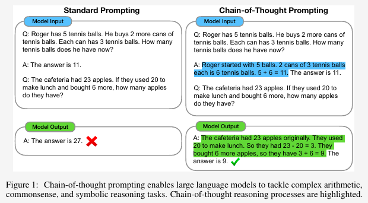

import torch
from transformers import pipeline
from transformers import GenerationConfig
import sys
sys.path.append('../src')
from llama2_prompt import construct_llama2_prompt, retrieve_answer, DEFAULT_SYSTEM_PROMPT
checkpoint = 'meta-llama/Llama-2-7b-chat-hf'
gen_config = GenerationConfig.from_pretrained(checkpoint)
gen_config.max_new_tokens = 4096
pipe = pipeline(task="text-generation",
model=checkpoint,
torch_dtype=torch.float32,
device_map='auto',
generation_config=gen_config,
model_kwargs={
'load_in_4bit': True
}
)Wei et al. [1] demonstrated that chain-of-thought prompting could improve the reasoning capability of large language models. By providing them with a few examples of natural language rationales that lead to the final answers, LLMs can perform better on complex reasoning.
It’ll be interesting to experiment with the newly released Llama 2 using this technique.
Load the Llama 2 7B-chat model
define a utility function
The function takes a list of questions and answers. The first element of the list could be a custom system prompt.
def run(questions, include_system_prompt=False):
dialog = []
if include_system_prompt:
system_prompt = questions.pop(0)
dialog.append({'role': 'system', 'content': system_prompt})
for q, a in zip(questions[::2], questions[1::2]):
dialog += [
{'role': 'user', 'content': q},
{'role': 'assistant', 'content': a},
]
if len(questions) % 2 != 0:
dialog.append({'role': 'user', 'content': questions[-1]})
prompt = construct_llama2_prompt(dialog)
answer = pipe(prompt)
answer = retrieve_answer(answer[0])
return answer, promptTry the fist example from the paper
According to the paper [1], the standard prompting got wrong model output, as shown below,

Use the same example to prompt Llama 2.
q1 = "Roger has 5 tennis balls. He buys 2 more cans of tennis balls. " \
"Each can has 3 tennis balls. How many tennis balls does he have now?"
a1 = "The answer is 11."
a1_cot = " Roger started with 5 balls. 2 cans of 3 tennis balls each " \
"is 6 tennis balls. 5 + 6 = 11. The answer is 11."
q2 = "The cafeteria had 23 apples. If they used 20 to make lunch and " \
"bought 6 more, how many apples do they have?"answer, prompt = run([q1, a1, q2])
print(f'Prompt:\n{prompt}')
print(f'\nOutputs:\n{answer}')Prompt:
<s>[INST] <<SYS>>
You are a helpful, respectful and honest assistant. Always answer as helpfully as possible, while being safe. Your answers should not include any harmful, unethical, racist, sexist, toxic, dangerous, or illegal content. Please ensure that your responses are socially unbiased and positive in nature.
If a question does not make any sense, or is not factually coherent, explain why instead of answering something not correct. If you don't know the answer to a question, please don't share false information.
<</SYS>>
Roger has 5 tennis balls. He buys 2 more cans of tennis balls. Each can has 3 tennis balls. How many tennis balls does he have now? [/INST] The answer is 11. </s><s>[INST] The cafeteria had 23 apples. If they used 20 to make lunch and bought 6 more, how many apples do they have? [/INST]
Outputs:
Great question! Let's see...
If the cafeteria had 23 apples and used 20 to make lunch, then they had 3 apples left.
If they bought 6 more apples, then they have a total of 3 + 6 = 9 apples now.
So, the answer is 9 apples.answer, prompt = run([q1, a1_cot, q2])
print(f'Prompt:\n{prompt}')
print(f'\nOutputs:\n{answer}')Prompt:
<s>[INST] <<SYS>>
You are a helpful, respectful and honest assistant. Always answer as helpfully as possible, while being safe. Your answers should not include any harmful, unethical, racist, sexist, toxic, dangerous, or illegal content. Please ensure that your responses are socially unbiased and positive in nature.
If a question does not make any sense, or is not factually coherent, explain why instead of answering something not correct. If you don't know the answer to a question, please don't share false information.
<</SYS>>
Roger has 5 tennis balls. He buys 2 more cans of tennis balls. Each can has 3 tennis balls. How many tennis balls does he have now? [/INST] Roger started with 5 balls. 2 cans of 3 tennis balls each is 6 tennis balls. 5 + 6 = 11. The answer is 11. </s><s>[INST] The cafeteria had 23 apples. If they used 20 to make lunch and bought 6 more, how many apples do they have? [/INST]
Outputs:
Great question! Let's see...
The cafeteria had 23 apples to start with.
Then, they used 20 apples to make lunch, so they had 23 - 20 = 3 apples left.
After that, they bought 6 more apples, so they now have 3 + 6 = 9 apples.
Therefore, the cafeteria has 9 apples in total.It seems Llama 2 has better reasoning ability.
SYSTEM_PROMPT = """\
You are a skilled math instructor. You should answer questions concisely.
Limit your answer to one word.
If a question does not make any sense, or is not factually coherent, explain why instead of answering something not correct. If you don't know the answer to a question, please don't share false information."""answer, prompt = run([SYSTEM_PROMPT, q1, a1_cot, q2], include_system_prompt=True)
print(answer)After using 20 apples to make lunch, the cafeteria had 23 - 20 = 3 apples left. When they bought 6 more apples, they now have 3 + 6 = 9 apples.References
[1]
J. Wei et al., “Chain-of-thought prompting elicits reasoning in large language models,” Advances in Neural Information Processing Systems, vol. 35, pp. 24824–24837, 2022.